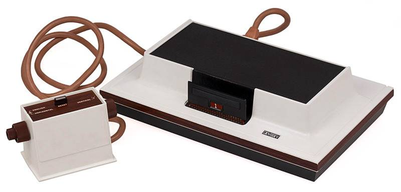
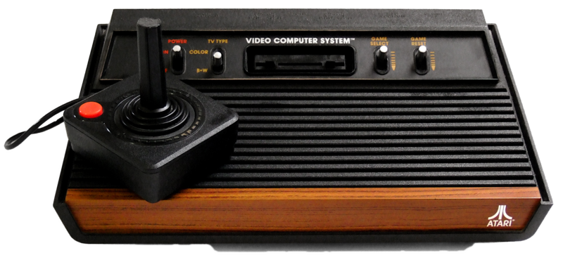
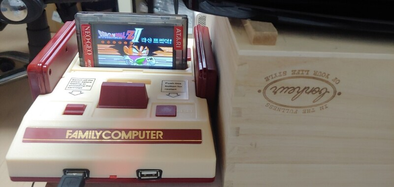
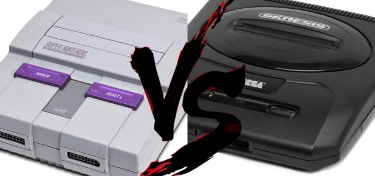
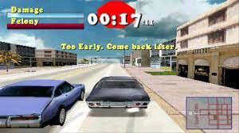
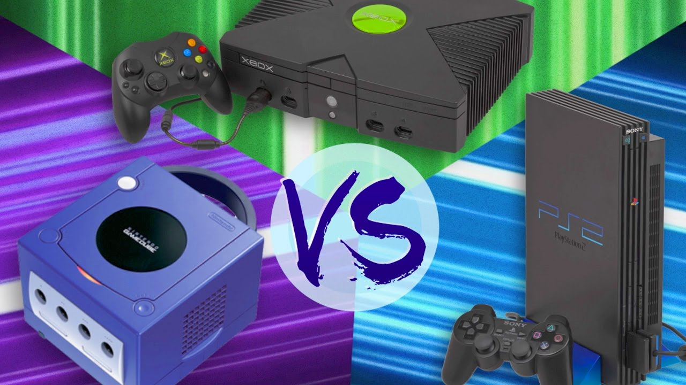
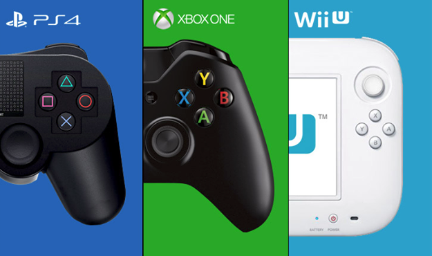
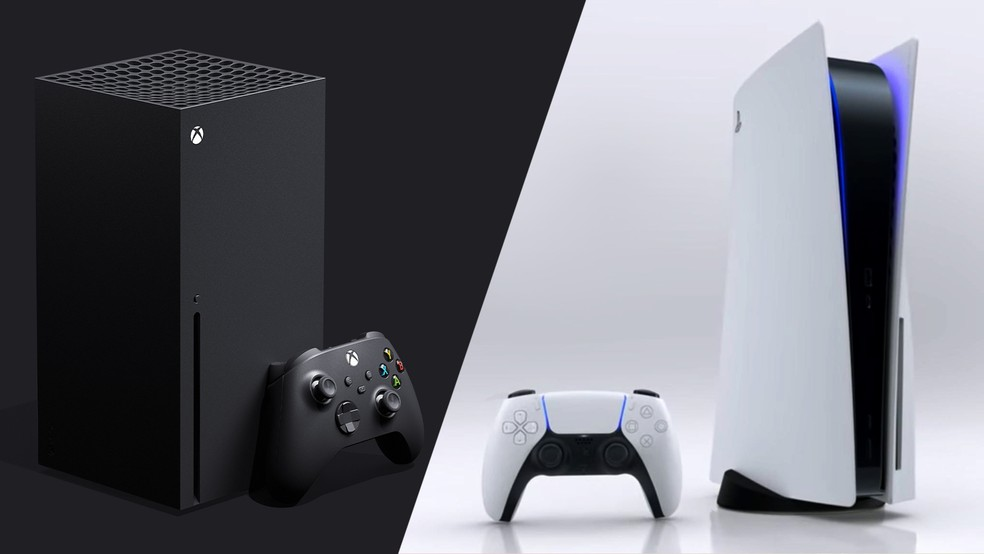

Video Games
Uma linha do tempo simples contando um pouco de sua historia.
Primeira geração O começo de tudo
A primeira geração se da por inicio em 1972, com o Odyssey Magnavox, em sua versão conhecida como "Brown Box". A geração foi marcada por hardware e software tão simples quanto se possa imaginar. Controles eram paddles. Um novo mundo estava sendo descoberto e começou a dar seus primeiros passos. Esta geração se encerra em 1976.
Segunda geração O reino do Atari 2600
A 2ª geração começa com o lançamento do Fairchild Channel F, primeiro videogame a usar cartuchos programáveis, criando uma tendencia que duraria quase 20 anos. Em 1977 a Atari lança um sucesso de vendas, dominando o mercado com suas diversas mudanças desde os paddles e sua gama de acessorios. Mas todo esse sucesso tambem trouxe problemas e prejuizos como o caso do E.T. the Extra-Terrestrial Esta geração foi de 1976 e 1984.
Terceira geração A entrada da Big N
Apos anos longe dos consoles a Nintendo volta na terceira geração com Famicom (NES). O salto tecnologico foi gigantesco começando a era do 8-bits. O NES teve dois grandes concorrentes O Sega Master System e o Atari 7800. Essa geração foi marcada pela mudança do controle, graficos coloridos e outras novidades. Essa geração foi de 1983 a 1990.
Quarta geração Sega x Nintendo
Apos a "era 8-bits" o proximo passo foi dado inicio a "era 16-bits" e a guerra Nintendo x Sega. A Nintendo com seu lendario Super Nintendo e a Sega com o Mega Drive/Genesis. Uma geração marcada por avanços tecnologicos que eram tecnologias de ponta da epoca como a introdução de CD-ROM, sprites maiores gerando assim graficos mais bonitos. A geração foi de 1987 a 1996.
Quinta geração A revolução do 3D
A quinta geração foi marcada pelo inicio dos jogos em 3D. Apos uma tentativa falha de parceria da Sony com a Nintendo, ela decide entrar nesta guerra com o PlayStation. A Sega caiu em vendas pela falta de jogos, e a Nintendo se manteve com titulos exclusivos gigantescos com seu Nintendo 64. A geração foi de 1993 a 1999.
Sexta geração Here comes a new challanger
Esta geração é marcada pela entrada do Microsoft no mercado dos video games com o Xbox, a Nintendo lançando o Game Cube, a Sony com PlayStation 2 e a Sega dando um adeus ao consoles com o Dreamcast. Uma grande coisa que essa geração trouxe foi a exclusividades de titulos para cada console. A geração foi de 1988 a 2004.
Setima Geração HD e novos controles
Setima geração veio com tudo com a Microsoft iniciando com o seu Xbox 360, logo em seguida a Sony com o PlayStation 3 e por ultimo a Nintendo com o Wii. Uma geração marcada por novos metodos de jogo a Nintendo com o Wii Remote, a Microsoft com o Kinect e a Sony com o PsMove, todos os metodos foram idealizados para se jogar com movimentos.

Oitava geração Nintendo lançando dois em uma geração
Esta gera foi iniciada pela Nintendo com o Wii U e mais ao fim da mesma lançando o Switch, a Sony com PlayStation 4 e a Microsoft com o Xbox One. Com uma diversificação de jogos, empresas trabalhando juntas para jogos multiplayer poderem ser jogados com pessoas de outro console.
Nona Geração Here comes a new challanger?
A ultima geração de consoles lançados ate o presente momento temos foi iniciada pela Google com o seu Stadia que foi seguido pela Microsoft e Sony, com o Xbox Series S e X, o PlayStation 5. Tambem tivemos a Amazon lançando o Amazon Luna. A Nintendo ainda não lançou nenhum console ate o presente momento.
